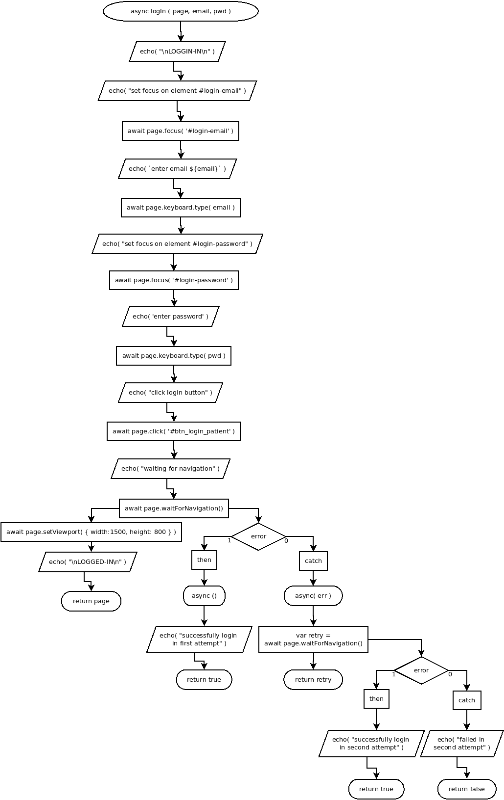

async logIn( page, email, pwd )
Flowchart

Code
async logIn ( page, email, pwd ){
echo( "\nLOGGIN-IN\n" );
// set focus on #login-email
echo( "set focus on element #login-email" );
await page.focus( '#login-email' );
// enter email login
//let email = 'a****a***a***a@implantgigi.com';
echo( `enter email ${email}` );
await page.keyboard.type( email );
// set focus on #login-password
echo( "set focus on element #login-password" );
await page.focus( '#login-password' );
//// enter pwd
echo( 'enter password' );
await page.keyboard.type( pwd );
// click button login
echo( "click login button" );
await page.click( '#btn_login_patient' );
// wait navigation completion
echo( "waiting for navigation" );
await page.waitForNavigation()
.then(
async ()=>{
echo( "successfully login in first attempt" );
return true;
}
)
.catch(
async ( err )=>{
var retry = await page.waitForNavigation()
.then(
async ()=>{
echo( "successfully login in second attempt" );
return true;
}
)
.catch(
async ( err )=>{
echo( "failed in second attempt" );
return false;
}
);
return retry;
}
);
await page.setViewport( { width:1500, height: 800 } );
echo( "\nLOGGED-IN\n" );
return page;
}